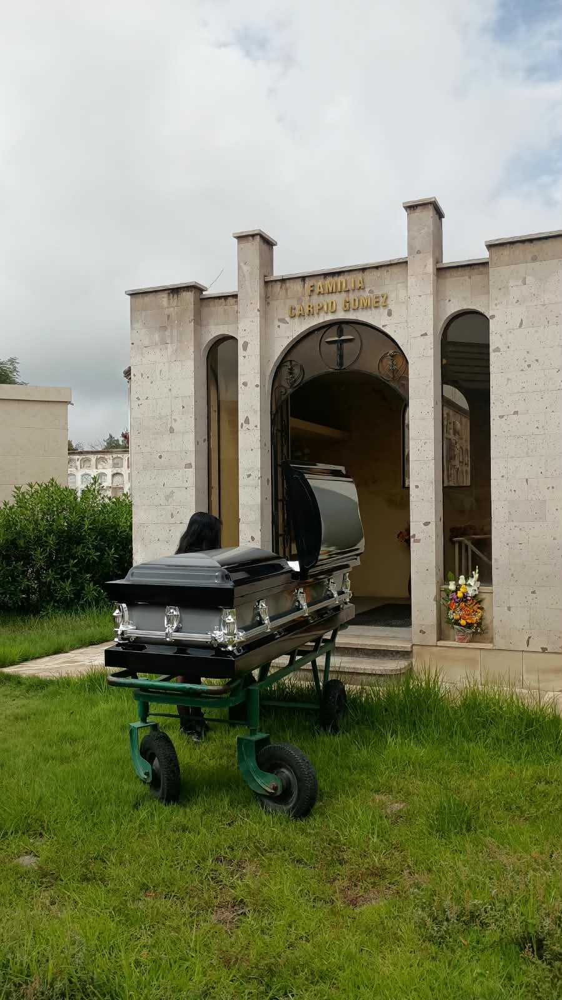
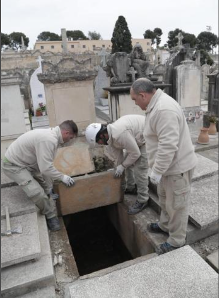

Servicio de exhumación de restos
La exhumación de restos es un procedimiento regulado que exige un estricto cumplimiento de las normativas sanitarias, ambientales y judiciales vigentes. En Funeraria Montecristo disponemos de un equipo técnico especializado y del equipamiento de bioseguridad necesario para ejecutar la apertura, extracción y posterior acondicionamiento de los restos con absoluta rigurosidad legal. Nos encargamos de gestionar de manera eficiente todos los permisos requeridos ante el ministerio de salud y las administraciones de los cementerios, garantizando un proceso técnico impecable y totalmente transparente.
Solicitar información

¿Qué incluye?
- Cumplimiento de la normativa sanitaria, ambiental y judicial
- Equipo técnico especializado
- Equipamiento de bioseguridad
- Gestión de permisos ante autoridades y cementerios
- Acondicionamiento de los restos
- Segun el plan requerido puede optar por reacondicionar otro ataud de su preferencia